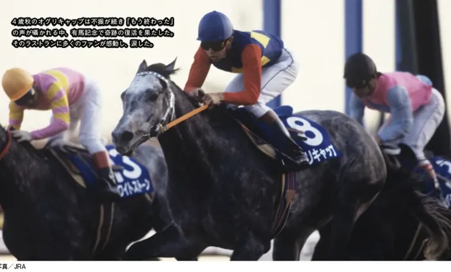
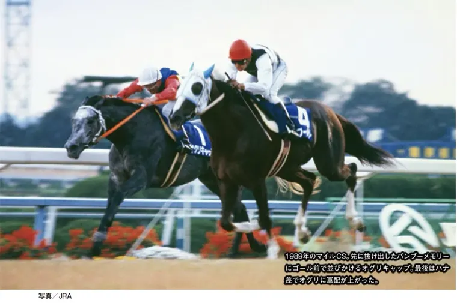
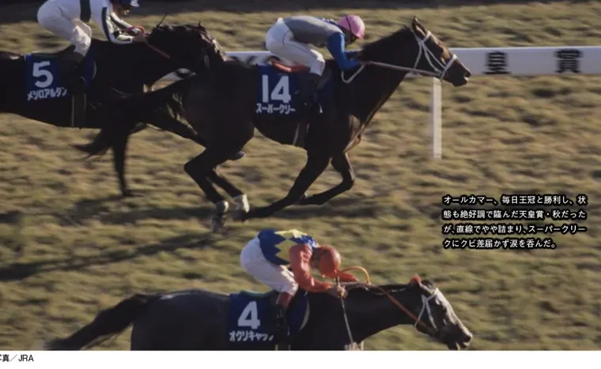

平时没事写的小垃圾，更新在 CSDN 博客：
- 2026.02【机创_①基于HAL库的单个步进电机PWM控制(张大头驱动板)】
- 2025.08调节步进电机速度时调PSC和调ARR的区别
- 2025.06STM32F407控制单个张大头闭环步进电机讲解与梯形加减速（HAL库）
- 2025.05YOLOv5推理代码解析
- 2025.05SR触发器为什么能够消抖
- 2025.04PytorchGPU版本
已解锁 0 / 16 项战绩·成就
每投喂一次，就揭晓一项小栗帽的胜利或荣誉。
※ 战绩与成就严格依据现实中赛马小栗帽（オグリキャップ）的历史记录整理。



- 🧑💻 GitHub：github.com/XIA-2005
- ✍️ CSDN 博客：blog.csdn.net/Xjb200512
- 🐛 问题与建议：到 GitHub Issues 提交，字段报告不包含个人信息